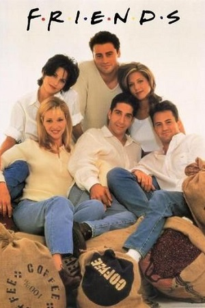
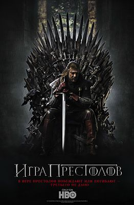

Школьный учитель химии узнает, что у него рак и решает идти во все тяжкие...
Лучше звоните Солу
Год выхода 2015
жанры:
Криминал
Драма
Статус: вышел
Возрастые ограничения: 16+
Среднее время серии: 50 минут
История об испытаниях и невзгодах, которые приходится преодолеть Солу Гудману,
адвокату по уголовным делам, в тот период, когда он пытается открыть свою собственную
адвокатскую контору.

Друзья
Год выхода 1999
жанры:
Комедия
Повседневность
Статус: вышел
Возрастые ограничения: 12+
Среднее время серии: 20 минут
Рейчел сбегает со своей свадьбы и переезжает к школьной подруге Монике, чтобы повзрослеть и найти друзей в Нью-Йорке

Игра престолов
Год выхода 2011
жанры:
Драма
Фэнтези
Статус: вышел
Возрастые ограничения: 18+
Среднее время серии: 55 минут
Рыцари, мертвецы и драконы — в эпической битве за судьбы мира. Сериал, который навсегда изменил телевидение.